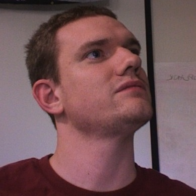
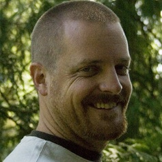
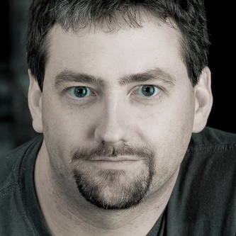
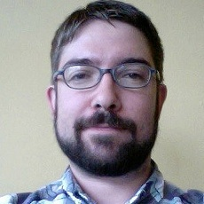
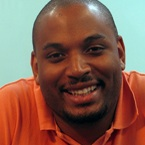

Speakers
The JRuby project has been making incredible progress and gaining popularity; all the while, the community has been growing—it's time for JRuby to have a conference of its own! The roster is highly technical, cutting edge, and features JRuby experts from all over the globe.

Logan Barnett
Developer, Integrum
Logan dove into Ruby by working with Rails and a JRuby GUI project. As the GUI project grew it would later help him and his team at Happy Camper create Monkeybars and it's sibling Rawr. Logan currently maintains these projects along with Jemini, a game framework for JRuby.
Ola Bini
Language Geek, ThoughtWorks
Ola Bini works as a language geek for ThoughtWorks. He is from Sweden but don't hold that against him. He is one of the JRuby core developers and have been involved in JRuby development since 2006. At one point in time, Ola got tired of all existing programming languages and decided to create his own, called Ioke. He has written a book called Practical JRuby on Rails Projects for Apress, he has talked at numerous conferences, and contributed to a large amount of open source projects.
His main passion lies in implementation languages, working on regular expression engines, trying to figure out to create good YAML parsers - all with the final goal of taking our understanding of languages to the next level.
Michael Bryzek
CTO / Founder, Gilt Groupe
Michael brings extensive experience in developing user-focused Internet software and a deep passion for leveraging technology to streamline logistics. Prior to Gilt Groupe, Michael founded Volunteer Solutions, an Internet application service provider for the philanthropic sector. Volunteer Solutions was acquired by United Way of America in 2001. Michael then served as Chief Technology Officer for United eWay, the United Way of America's technology subsidiary. He holds a B.S. and Masters Degree in Computer Science from the Massachusetts Institute of Technology.

Anthony Eden
CTO, SDC Hawaii LLC
Anthony Eden is currently the CTO at SDC Hawaii LLC, the creators of chi.mp, a personal content hub and identity platform built on the .mp top-level domain. Anthony has been developing applications for the web since 1995. Beginning with Perl and then Java, Anthony developed a wide variety of web sites and web applications for publishing, domain registration, and the mobile web. In 2005 Anthony began using Ruby and Rails and quickly made the switch from Java to Ruby for the majority of his work. Anthony has a long history of open source development including recent additions such as ActiveWarehouse, Rails SQL Views and Refinery.

Justin Gehtland
President, Relevance, Inc.
Justin Gehtland is the President and co-founder of Relevance, a Durham, NC-based software development organization and B Corporation. He has written 8 technical books, including the Jolt Award-winning "Better, Faster, Lighter Java", "Pragmatic Ajax", and contributing to "Agile Web Development with Rails". He is focused to growing Relevance to be the best software development partner on Earth.

Charles Nutter
JRuby Co-Lead, Engine Yard Inc.
Charles Oliver Nutter has been co-lead of the JRuby project for the past four years, working on performance and Java integration, and helping to coordinate community efforts. During that time JRuby has become a premier platform for Ruby users, allowing both a gateway to Java-centric organizations as well as an excellent Ruby implementation. Charles hopes to expand JRuby’s success to other JVM languages, building the JVM into the best platform for multi-language development. Charlie is employed working on JRuby full time at Engine Yard.
Thomas Enebo
JRuby Co-Lead, Engine Yard Inc.
Thomas Enebo has been a practitioner of Java for over a decade and he is the co-lead of the JRuby project. Thomas has also been happily using Ruby since 2001. In addition to working on JRuby, Tom is interested in improving the state of alternative languages on the Java Virtual Machine. Tom is employed working on JRuby full time at Engine Yard.
Michael Mullany
VP of Marketing, Engine Yard Inc.
Michael is responsible for product management, marketing and strategy at Engine Yard. Prior to Engine Yard, he was Vice President of Products and Marketing at PeakStream (acquired by Google), a company that developed a stream programming runtime for heterogeneous systems. He was also Vice President of Marketing at VMware, leading the marketing and product management teams during the company’s breakout into the server computing market. He has also led product management and marketing teams at Loudcloud and Netscape.
He has a BA in Economics from Harvard, magna cum laude, and an MBA from Stanford Graduate School of Business, where he was an Arjay Miller Scholar.

Joe O'Brien
Co-Founder, EdgeCase LLC
Joe is a father, speaker, author and developer. Before helping found EdgeCase, LLC, Joe was a developer with ThoughtWorks and spent much of his time working with large J2EE and .NET systems for Fortune 500 companies. He has spent his career as a developer, project manager, and everything in between. Joe is a passionate member of the open source community. He co-founded the Columbus Ruby Brigade and helped organize the Chicago Area Ruby Users Group. His passions are Agile Development in the Enterprise, Ruby, and demonstrating to the Fortune 500 the elegance and power of this incredible language.
Nick Sieger
JRuby Developer, Engine Yard Inc.
Nick Sieger is an engineer at Engine Yard, working on JRuby and leading the effort to make the Java Virtual Machine a robust yet easy-to-use deployment platform for Rails and Ruby web applications. He created and co-maintains the JDBC adapter for ActiveRecord that JRuby on Rails uses for database connectivity, as well as the Warbler tool and JRuby-Rack library for dealing with Java application server deployment. He maintains a blog on Ruby and JRuby-related topics at http://blog.nicksieger.com/.

Chad Wathington
VP, Product Development, ThoughtWorks Studios
Chad is responsible for ensuring that ThoughtWorks Studios designs and delivers great products. As the Vice President of Product Development, he provides strategic vision and commercial direction for ThoughtWorks Studios.
Chad joined ThoughtWorks in 2004, after a stint in strategic consulting at the Boston Consulting Group. Before joining the product division, he led the internal change management effort for ThoughtWorks' US business. Chad also has experience as a Product Manager, Business Analyst, Quality Assurance Analyst, and Project Manager. He has worked in various software industry verticals including manufacturing, health care, financial services, and consumer services. Chad is a Caterpillar Corp. trained Six Sigma Black Belt. He received a Bachelor of Arts in Economics from Harvard University, Cambridge MA.
John Woodell
Developer, Google
John Woodell is a web developer at Google, working primarily on internal Rails applications. He is a Ruby enthusiast, and contributor to the appengine-apis project. John’s early career was in technical publishing and print advertising. He started creating web pages in the early ’90s, and spent over a decade developing sites in Perl, Java and PHP. John discovered Ruby On Rails in 2005 and has been a dedicated Rubyist ever since. John also hosts Google Tech Talks on Ruby and related topics.